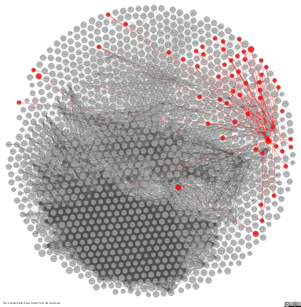
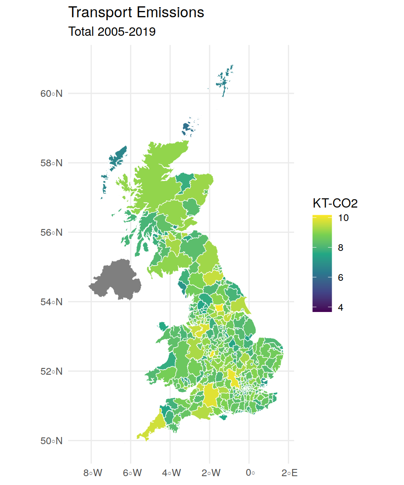

| sector | 2016 | 2017 | 2018 | 2019 |
|---|---|---|---|---|
| Commercial Electricity | 325.48 | 278.88 | 252.67 | 226.23 |
| Domestic Electricity | 230.75 | 204.08 | 183.57 | 164.24 |
| Industry Electricity | 116.00 | 111.22 | 107.68 | 80.62 |
| Public Sector Electricity | 86.86 | 71.24 | 68.77 | 61.36 |
| sector | year | territorial_emissions |
|---|---|---|
| Commercial Electricity | 2016 | 325.48 |
| Domestic Electricity | 2016 | 230.75 |
| Industry Electricity | 2016 | 116.00 |
| Public Sector Electricity | 2016 | 86.86 |
| Commercial Electricity | 2017 | 278.88 |
| Domestic Electricity | 2017 | 204.08 |
| Industry Electricity | 2017 | 111.22 |
| Public Sector Electricity | 2017 | 71.24 |
| Commercial Electricity | 2018 | 252.67 |
| Domestic Electricity | 2018 | 183.57 |
| Industry Electricity | 2018 | 107.68 |
| Public Sector Electricity | 2018 | 68.77 |
| Commercial Electricity | 2019 | 226.23 |
| Domestic Electricity | 2019 | 164.24 |
| Industry Electricity | 2019 | 80.62 |
| Public Sector Electricity | 2019 | 61.36 |
| year | start | end |
|---|---|---|
| 2005 | 2005-01-01 | 2005-12-31 |
| 2006 | 2006-01-01 | 2006-12-31 |
| 2007 | 2007-01-01 | 2007-12-31 |
| label | comment |
|---|---|
| KT-CO2 | Kilotonnes of Carbon Dioxide |
| year | area | sector | territorial_emissions | unit_of_measure |
|---|---|---|---|---|
| 2005 | Hartlepool | Commercial Electricity | 77.19 | KT-CO2 |
| 2005 | Hartlepool | Commercial Gas | 16.69 | KT-CO2 |
| 2005 | Hartlepool | Commercial ‘Other Fuels’ | 0.20 | KT-CO2 |
| 2005 | Hartlepool | Domestic Electricity | 80.64 | KT-CO2 |
| 2005 | Hartlepool | Domestic Gas | 131.38 | KT-CO2 |
| 2005 | Hartlepool | Domestic ‘Other Fuels’ | 4.07 | KT-CO2 |
| label | notation | boundary |
|---|---|---|
| Glasgow City | S12000049 | MULTIPOLYGON (((-… |
| Aberdeen City | S12000033 | POLYGON ((-2.0613… |
| City of London | E09000001 | MULTIPOLYGON (((-… |
| Barking and Dagenham | E09000002 | MULTIPOLYGON (((0… |
| Barnet | E09000003 | POLYGON ((-0.1819… |
| Bexley | E09000004 | POLYGON ((0.2031 … |
| label | sort_priority | parent |
|---|---|---|
| Commercial Electricity | 1 | Commercial |
| Commercial Gas | 2 | Commercial |
| Commercial ‘Other Fuels’ | 3 | Commercial |
| Domestic Electricity | 4 | Domestic |
| Domestic Gas | 5 | Domestic |
| Domestic ‘Other Fuels’ | 6 | Domestic |
| year | year_start | year_end | area | area_notation | area_boundary | sector | sector_notation | sector_sort_priority | territorial_emissions | unit_of_measure |
|---|---|---|---|---|---|---|---|---|---|---|
| 2005 | 2005-01-01 | 2005-12-31 | Hartlepool | E06000001 | POLYGON ((-1.24098 54…. | Commercial Electricity | commercial-electricity | 1 | 77.19 | KT-CO2 |
| 2005 | 2005-01-01 | 2005-12-31 | Hartlepool | E06000001 | POLYGON ((-1.24098 54…. | Commercial Gas | commercial-gas | 2 | 16.69 | KT-CO2 |
| 2005 | 2005-01-01 | 2005-12-31 | Hartlepool | E06000001 | POLYGON ((-1.24098 54…. | Commercial ‘Other Fuels’ | commercial-other-fuels | 3 | 0.20 | KT-CO2 |
| 2005 | 2005-01-01 | 2005-12-31 | Hartlepool | E06000001 | POLYGON ((-1.24098 54…. | Domestic Electricity | domestic-electricity | 4 | 80.64 | KT-CO2 |
| 2005 | 2005-01-01 | 2005-12-31 | Hartlepool | E06000001 | POLYGON ((-1.24098 54…. | Domestic Gas | domestic-gas | 5 | 131.38 | KT-CO2 |
| 2005 | 2005-01-01 | 2005-12-31 | Hartlepool | E06000001 | POLYGON ((-1.24098 54…. | Domestic ‘Other Fuels’ | domestic-other-fuels | 6 | 4.07 | KT-CO2 |
| 2005 | 2005-01-01 | 2005-12-31 | Hartlepool | E06000001 | POLYGON ((-1.24098 54…. | Industry Electricity | industry-electricity | 7 | 101.15 | KT-CO2 |
| 2005 | 2005-01-01 | 2005-12-31 | Hartlepool | E06000001 | POLYGON ((-1.24098 54…. | Industry Gas | industry-gas | 8 | 33.21 | KT-CO2 |
| 2005 | 2005-01-01 | 2005-12-31 | Hartlepool | E06000001 | POLYGON ((-1.24098 54…. | Large Industrial Installations | large-industrial-installations | 9 | 181.10 | KT-CO2 |
| 2005 | 2005-01-01 | 2005-12-31 | Hartlepool | E06000001 | POLYGON ((-1.24098 54…. | Industry ‘Other Fuels’ | industry-other-fuels | 10 | 20.44 | KT-CO2 |
| 2005 | 2005-01-01 | 2005-12-31 | Hartlepool | E06000001 | POLYGON ((-1.24098 54…. | Agriculture | agriculture | 11 | 2.09 | KT-CO2 |
| 2005 | 2005-01-01 | 2005-12-31 | Hartlepool | E06000001 | POLYGON ((-1.24098 54…. | LULUCF Net Emissions: Forest land | lulucf-net-emissions-forest-land | 12 | -1.65 | KT-CO2 |
| 2005 | 2005-01-01 | 2005-12-31 | Hartlepool | E06000001 | POLYGON ((-1.24098 54…. | LULUCF Net Emissions: Cropland | lulucf-net-emissions-cropland | 13 | 2.40 | KT-CO2 |
| 2005 | 2005-01-01 | 2005-12-31 | Hartlepool | E06000001 | POLYGON ((-1.24098 54…. | LULUCF Net Emissions: Grassland | lulucf-net-emissions-grassland | 14 | -2.94 | KT-CO2 |
| 2005 | 2005-01-01 | 2005-12-31 | Hartlepool | E06000001 | POLYGON ((-1.24098 54…. | LULUCF Net Emissions: Wetlands | lulucf-net-emissions-wetlands | 15 | 0.00 | KT-CO2 |
Linked Data Frames
Robin Gower
What is {vctrs}?
What is linked-data?


Encoding graphs as triples
BASE <http://example.org/>
PREFIX foaf: <http://xmlns.com/foaf/0.1/>
PREFIX xsd: <http://www.w3.org/2001/XMLSchema#>
PREFIX schema: <http://schema.org/>
PREFIX dcterms: <http://purl.org/dc/terms/>
PREFIX wd: <http://www.wikidata.org/entity/>
<bob#me>
a foaf:Person ;
foaf:knows <alice#me> ;
schema:birthDate "1990-07-04"^^xsd:date ;
foaf:topic_interest wd:Q12418 .
wd:Q12418
dcterms:title "Mona Lisa" ;
dcterms:creator <http://dbpedia.org/resource/Leonardo_da_Vinci> .
<http://data.europeana.eu/item/04802/243FA8618938F4117025F17A8B813C5F9AA4D619>
dcterms:subject wd:Q12418 .Melting tidy data to triples
BASE <http://example.org/>
PREFIX dimension: <http://example.org/dimension/>
PREFIX measure: <http://example.org/measure/>
PREFIX rdfs: <http://www.w3.org/2000/01/rdf-schema#>
PREFIX geosparql: <http://www.opengis.net/ont/geosparql#>
<obs#1>
dimension:year <year#2005> ;
dimension:area <area#hartlepool> ;
dimension:sector <sector#commercial-electricity> ;
measure:emissions 77.19 .
<year#2005>
rdfs:label "2005" .
<area#hartlepool>
rdfs:label "Hartlepool" ;
geosparql:hasGeometry <geometry#hartlepool> .
<geometry#hartlepool>
geosparql:asWKT "POLYGON ((-1.24098 54.72318, -1.24401 54.72157 ... ))" .
<sector#commercial-electricity>
rdfs:label "Commercial Electricity" ;
ui:sortPriority 1 .The linked open-data cloud
Working with LDF Resources
Creating resources
uris <- c("http://example.net/id/apple",
"http://example.net/id/banana",
"http://example.net/id/carrot")
labels <- c("Apple", "Banana", "Carrot")
descriptions <- data.frame(uri=uris, label=labels)
(food <- resource(uris, descriptions))<ldf_resource[3]>
[1] Apple Banana Carrot
Description: uri, labelRepeating resources
(kitchen <- tibble(
dish=c("Fruit Salad", "Fruit Salad",
"Carrot Salad", "Carrot Salad"),
food=resource(c("http://example.net/id/apple",
"http://example.net/id/banana",
"http://example.net/id/apple",
"http://example.net/id/carrot"),
descriptions),
quantity=c(2,2,1,3)))# A tibble: 4 × 3
dish food quantity
<chr> <ldf_rsrc> <dbl>
1 Fruit Salad Apple 2
2 Fruit Salad Banana 2
3 Carrot Salad Apple 1
4 Carrot Salad Carrot 3Accessing descriptions
[1] "http://example.net/id/apple" "http://example.net/id/banana"
[3] "http://example.net/id/carrot" uri label
1 http://example.net/id/apple Apple
2 http://example.net/id/banana Banana
3 http://example.net/id/carrot CarrotLoading data
Tabulating linked-data with SPARQL
# A tibble: 100 × 3
uri label comment
<chr> <chr> <chr>
1 http://dbpedia.org/resource/Art_rock Art rock "Art rock …
2 http://dbpedia.org/resource/Bebop Bebop "Bebop or …
3 http://dbpedia.org/resource/Britpop Britpop "Britpop w…
4 http://dbpedia.org/resource/Bubblegum_pop Bubblegum pop "Bubblegum…
5 http://dbpedia.org/resource/Fighting_game Fighting game "A fightin…
6 http://dbpedia.org/resource/Free_improvisation Free improvisation "Free impr…
7 http://dbpedia.org/resource/Greek_hip_hop Greek hip hop "Greek hip…
8 http://dbpedia.org/resource/Grunge Grunge "Grunge (s…
9 http://dbpedia.org/resource/Historical_fiction Historical fiction "Historica…
10 http://dbpedia.org/resource/Morality_play Morality play "The moral…
# … with 90 more rowsmusic_genres <- resource(music_genre_results$uri, description=music_genre_results)
# find music genres where the comment mentions "dance"
music_genres[grep("dance", property(music_genres, "comment"))]<ldf_resource[12]>
[1] Polka Trance music
[3] Vaudeville Zarzuela
[5] Afro/Cosmic music Benga music
[7] Bubblegum dance Waltz (International Standard)
[9] Logobi Sega (genre)
[11] K-pop Western swing
Description: uri, label, commentldf::get_cube
# A tibble: 129,388 × 5
year area sector territorial_emissions
<ldf_ntrv> <ldf_rsrc> <ldf_rsrc> <dbl>
1 2005 Hartlepool Commercial Electricity 77.2
2 2005 Hartlepool Commercial Gas 16.7
3 2005 Hartlepool Commercial 'Other Fuels' 0.2
4 2005 Hartlepool Domestic Electricity 80.6
5 2005 Hartlepool Domestic Gas 131.
6 2005 Hartlepool Domestic 'Other Fuels' 4.07
7 2005 Hartlepool Industry Electricity 101.
8 2005 Hartlepool Industry Gas 33.2
9 2005 Hartlepool Large Industrial Installations 181.
10 2005 Hartlepool Industry 'Other Fuels' 20.4
# … with 129,378 more rows, and 1 more variable: unit_of_measure <ldf_rsrc>Read more about downloading linked-data in the package documentation.
# English Local Authority areas with the highest emissions from transport
(transport_emissions <- emissions %>%
filter(sector %>% property("parent") %>% label() == "Transport") %>%
group_by(area) %>%
summarise(total_emissions=sum(territorial_emissions)) %>%
arrange(-total_emissions))# A tibble: 379 × 2
area total_emissions
<ldf_rsrc> <dbl>
1 Leeds 25831.
2 Birmingham 22273.
3 Buckinghamshire 21006.
4 Wiltshire 19024.
5 Cheshire East 17929.
6 Cornwall 15703.
7 Cheshire West and Chester 14393.
8 County Durham 14210.
9 South Gloucestershire 14013.
10 Doncaster 13778.
# … with 369 more rowstransport_emissions_map <-
description(transport_emissions$area) %>%
filter(!is.na(boundary)) %>%
st_as_sf(wkt="boundary", crs="WGS84") %>%
left_join(mutate(transport_emissions,
geo=uri(area)),
by=c("uri"="geo"))
ggplot(transport_emissions_map) +
geom_sf(aes(fill=log(total_emissions)),
colour="white", size=0.2) +
scale_fill_viridis_c("KT-CO2") +
labs(title="Transport Emissions",
subtitle="Total 2005-2019")
Linking relational data
library(nycflights13)
flights_ldf <- flights %>% mutate(
carrier=resource(carrier, rename(airlines, uri=carrier)),
origin=resource(origin, rename(airports, uri=faa), fill_missing=T),
dest=resource(dest, rename(airports, uri=faa), fill_missing=T),
tailnum=resource(tailnum, rename(planes, uri=tailnum), fill_missing=T))Gotchas
Lessons for working with {vctrs}
Dispatching on base type
http://example.net/id/apple http://example.net/id/banana
2 1
http://example.net/id/carrot
1 Use {vctrs} to retain descriptions
r v
1 A 1
2 B 2 r v
1 B 3
2 C 4 r v
1 A 1
2 B 2
3 B 3
4 NA 4Tidyverse is {vctrs}-aware
Try it for yourself
Learn more
- Documentation for the
{vctrs}package - vctrs.r-lib.org
- Documentation for the
{ldf}package - swirrl.github.io/linked-data-frames
- Data Cubes from by the Integrated Data Programme
- beta.gss-data.org.uk
- Linked-data schema used by PublishMyData
- ontologies.publishmydata.com
- Occasional tweets from me
- @robsteranium